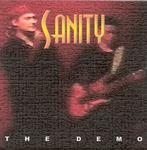

Home Artist links

Sanity - The Demo
| Artist: | Sanity |
| Title: | The Demo |
| Label: | self produced |
| Length(s): | 31 minutes |
| Year(s) of release: | 2003 |
| Month of review: | [10/2003] |
Line up
Kees van Keulen - vocals
Jeroen Hoegee - guitars
Nathan Cairo - keyboards
Ruud Kool - bass
Fred den Hartog - drums
Tracks
| 1) | Together As One | 7.55
|
| 2) | Man Along The Line | 7.42
|
| 3) | Sanity (live) | 4.41
|
| 4) | Beyond Believe (live) | 3.51
|
| 5) | Lonely At The World (live) | 7.38
|
Summary
Musicians of Blind Fury together with the vocalist of symphonic hardrock
band Bagheera form a new band called Sanity since 2000. This is a demo
disc, the band is working on a cd. It seems a mini cd with four tracks
was already released at some point. Some of these songs appear
live on this demo.
The music
Together As One opens as a rather standard up-tempo progmetal track.
The drums are on the busy side, plenty of double bass drums and variation
there. Quite soon after however the dancing string like synths set in, and
the vocal side also becomes a bit more epic. The verses continue to be
on the undistinctive side though. The vocalist, in places has the tendency
to dramatize which fits in well with the music. References can be made
to Saviour Machine. The middle part of the song is ballad like, strumming
acoustic guitars. The vocalist should sound more decisive here, it is all
a bit too mellow here. He sounds a bit disinterested. When power
sets in again, it gets better. An epic, bombastic conclusion which
should come over very well in a live setting. The enthusiasm is there.
If I did not know better, I would think this is a live song. Very nice.
Man Along The Line is the second and final studio demo track. It opens
with acoustic guitar and slow vocals, some electric guitar riding along
in the back, building a nice atmospheric again.
The vocals are again rather dramatic, which in this case
does not really help me in understanding them. The song slowly builds
up taking some three minutes to finally burst loose. This is rather
straightforward ballad like material, in the line of Vanden Plas and
yes Saviour Machine again. The song ends bombastically again.
Sanity is the first of the live tracks. As the band announced the sound
is not great. In fact, it is quite bad. The band comes off as sounding
a bit heavier here. Quite a catchy chorus on this one, in the line
of the poppy side of Twelfth Night. Beyond Believe is a rather short
and catchy track. I can hear this is symphonic hard rock, but much
of the details can not be heard well. The songs sound alright, generally:
power, melody, enthusiasm are present. Again the vocals remind a bit of
Twelfth Night.
I am not sure what the band means with the title, Lonely At The World,
but that it concludes this demo is easy enough. This is a heavier track,
more metal like. Here the operatic tendencies can become a bit annoying,
although later emotion comes through, the way of singing fulfills
a purpose. I hope the singer has more tricks up his sleave when he gives a
full concert. Still, drama is fine, but it needs dosing and more variation
is called for on a full album. Again a full ending with some nice
carpets of keyboards.
There was also a video cd, which did not play in my laptop.
Conclusion
Considering the first two songs on this demo, it shows that the band
is well at home in the studio. The singing is on the dramatic side
reminding often of Saviour Machine, although the vocalist here is not
as good (yet). Compositions are fine, although I would invite the
band to be more adventurous, the second of the songs being rather
straightforward. Both songs end in bombasm and I like that, but on
a full cd I hope the band realizes that you cannot keep on doing that.
Notwithstanding, I liked what I heard.
The live material gives an impression of the band live at work.
The recording quality is quite bad here, the band does realize that, knowing that this demo is not actually for sale. It does show that
the band can realize what they do in the studio quite easily on stage.
The playing is energetic and the sound is full.
© Jurriaan Hage